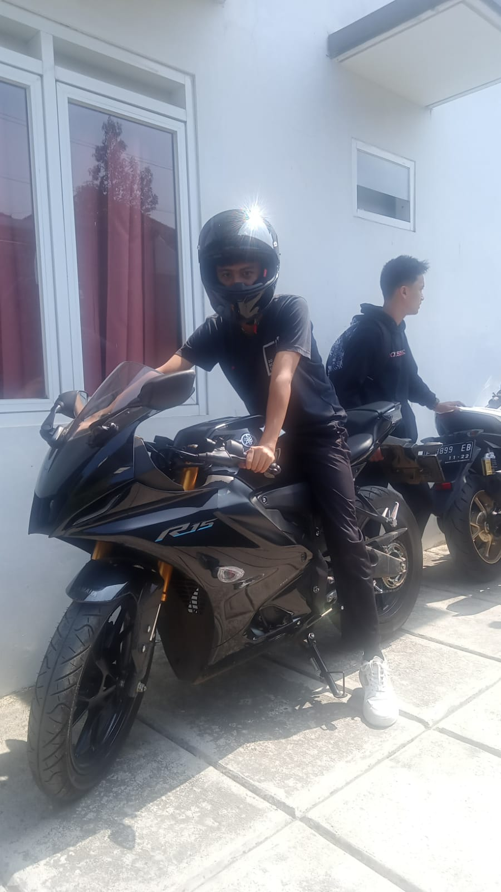
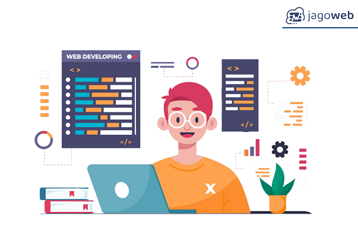

Hello my name is afriza
I study at Wikrama Vocational School, my major is PPLG X-3
My dream is to become a front-end
as well as being a front-end programmer

Front-End Developer bertanggung jawab untuk mengimplementasikan desain yang telah dibuat oleh desainer web atau tim desain. Mereka menggunakan bahasa pemrograman seperti HTML, CSS
Tugas Seorang Programmer Memodelkan atau merencanakan sistem melalui flowchart, ERD, UML, dan sejenisnya. Merancang program dengan dukungan perangkat seperti Figma dan Adobe XD. Mengembangkan program yang telah direncanakan dengan menulis kode program
Web developer bertanggung jawab atas pembuatan, pembangunan, dan pemeliharaan website. Tidak hanya merancang tampilan website, tetapi juga memastikan seluruh fungsi berjalan tanpa kendala